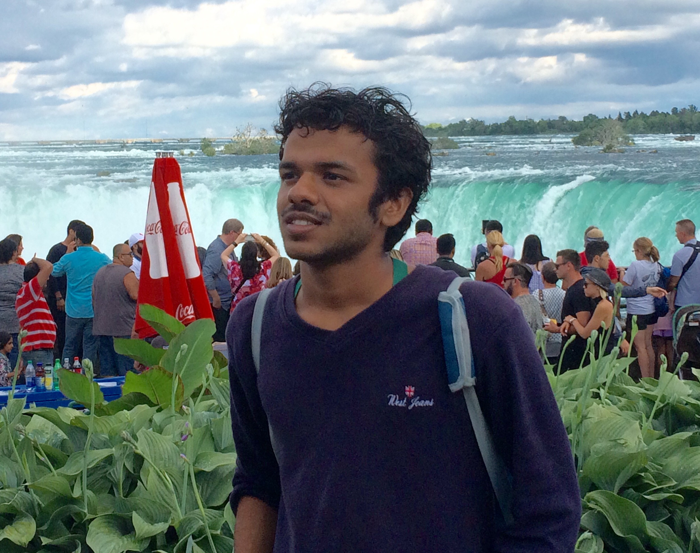

I am a final year undergraduate student at National Institute of Technology Karnataka. My research intersts can be broadly classified as Machine Learning applications in Signal Processing and Data Analytics.
I have previously worked with Robert Laganiere in University of Ottawa on vehicle detection systems used for driver assistance and smart video surveillance applications.I have also interned in Vision and Speech Lab in IIIT Hyderabad where I worked on NIST I-vector Language Identification challenge.
Currently,I am working towards my bachelor thesis under Dr. Prasanta Kumar Ghosh in Indian Institute of Science on analysis of the Indian Spoken English Pronunciation using rhythmic and prosodic cues.
Apart from this technical experience, I bring in with me a wholesome package of a 'Semi-classical singer','Convincing actor','Good orator' and above all,an 'Engaging Story-teller'. I can go to any extent to keep my audience entertained.